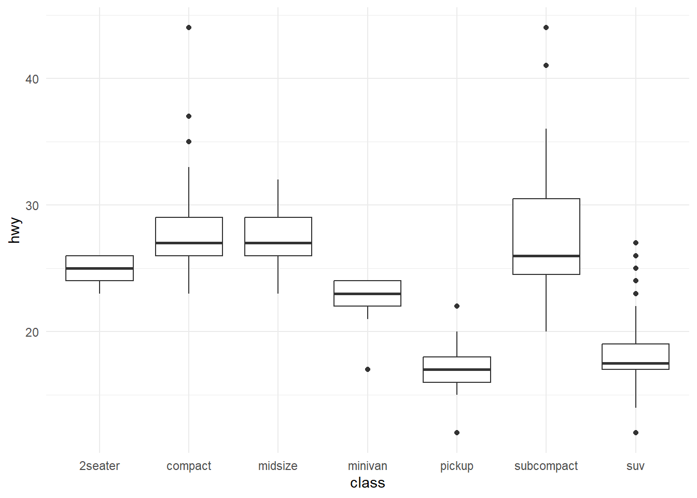
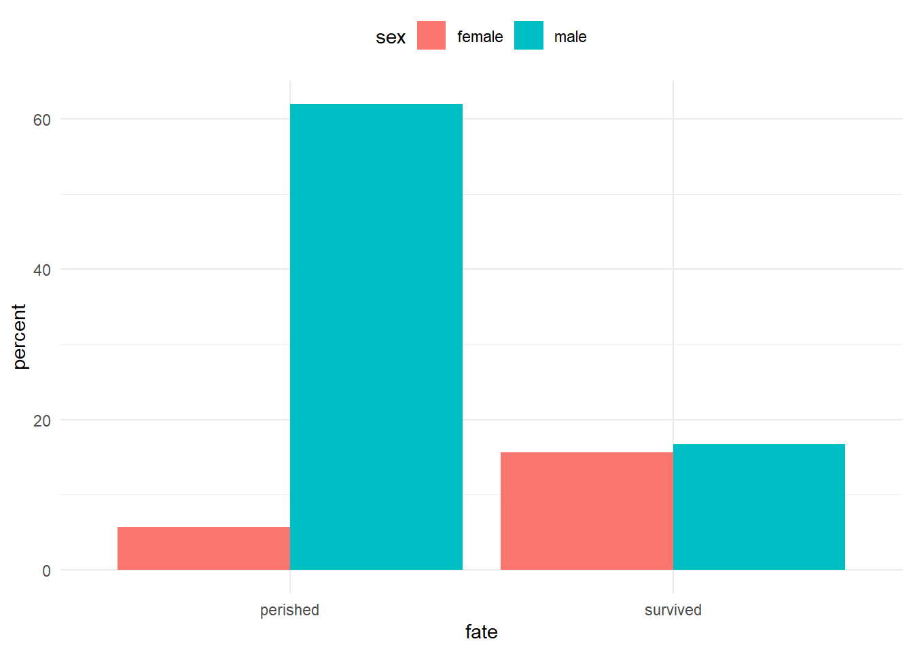
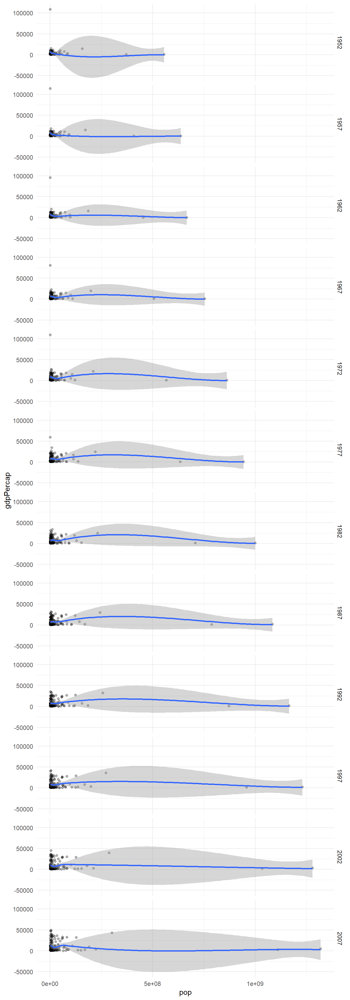
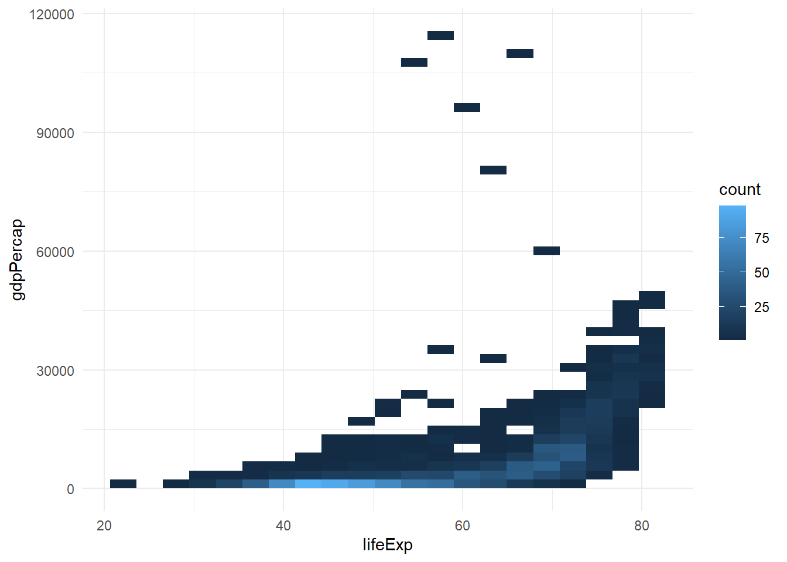
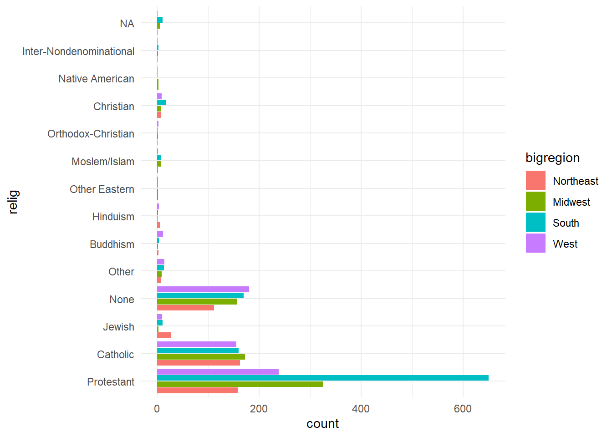
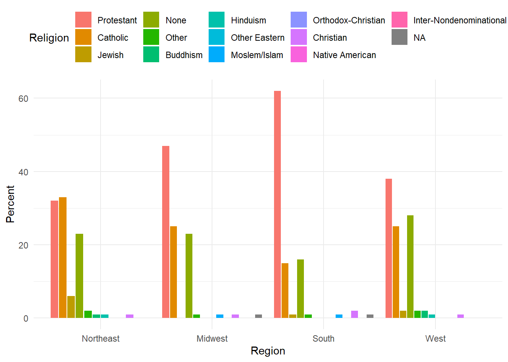
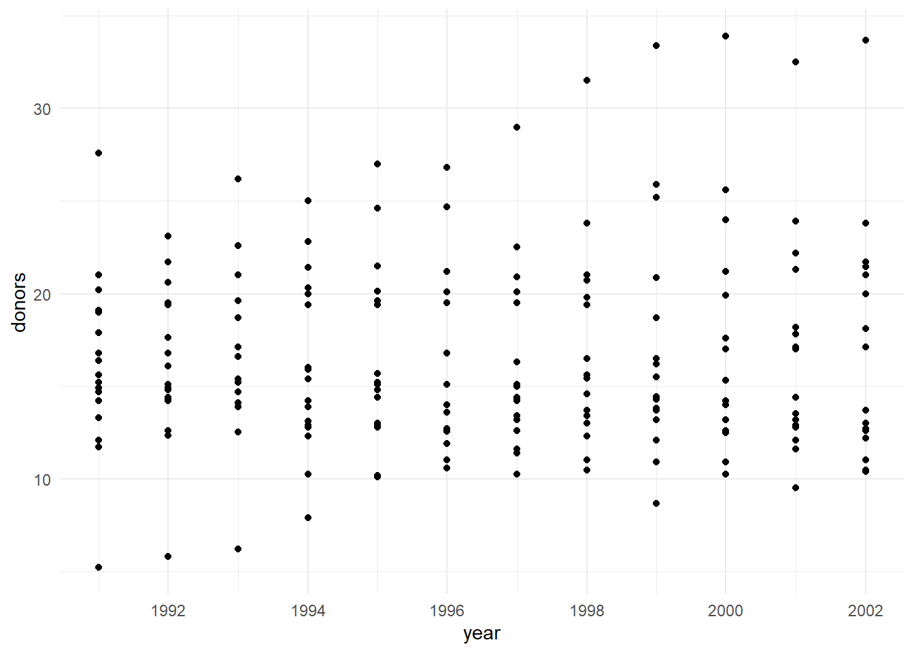

library(tidyverse)
ggplot(mpg) +
geom_boxplot(aes(x = class, y = hwy))
Awesome Me
April 25, 2023
(tab content) 1
(tab content) 2
Here is some example title.
This is my introduction.
Wake up
Drink water
Sleep again
Wake up
fate sex n percent
1 perished male 1364 62.0
2 perished female 126 5.7
3 survived male 367 16.7
4 survived female 344 15.6p <- ggplot(data = titanic,
mapping = aes(x = fate, y = percent, fill = sex))
p + geom_bar(position = "dodge", stat = "identity") +
theme(legend.position = "top")
# Let's try to replicate the graph in the lecture slide.
# Bar charts are good for visualizing the trend
socviz::oecd_sum# A tibble: 57 × 5
# Groups: year [57]
year other usa diff hi_lo
<int> <dbl> <dbl> <dbl> <chr>
1 1960 68.6 69.9 1.30 Below
2 1961 69.2 70.4 1.20 Below
3 1962 68.9 70.2 1.30 Below
4 1963 69.1 70 0.900 Below
5 1964 69.5 70.3 0.800 Below
6 1965 69.6 70.3 0.700 Below
7 1966 69.9 70.3 0.400 Below
8 1967 70.1 70.7 0.600 Below
9 1968 70.1 70.4 0.300 Below
10 1969 70.1 70.6 0.5 Below
# … with 47 more rows# Revisit gapminder plots and experiment with different ways to facet the data
library(gapminder)
gapminder <- gapminder
p <- ggplot(gapminder, aes(x = pop, y = gdpPercap))
p + geom_point(alpha = 0.3) +
geom_smooth() +
facet_grid(year ~ .)
# Life expectancy vs gdp per capita
p <- ggplot(gapminder, aes(x=lifeExp, y = gdpPercap))
p + geom_bin2d(bins = c(20,50))
# A tibble: 2,867 × 32
year id ballot age childs sibs degree race sex region incom…¹ relig
<dbl> <dbl> <labe> <dbl> <dbl> <lab> <fct> <fct> <fct> <fct> <fct> <fct>
1 2016 1 1 47 3 2 Bache… White Male New E… $17000… None
2 2016 2 2 61 0 3 High … White Male New E… $50000… None
3 2016 3 3 72 2 3 Bache… White Male New E… $75000… Cath…
4 2016 4 1 43 4 3 High … White Fema… New E… $17000… Cath…
5 2016 5 3 55 2 2 Gradu… White Fema… New E… $17000… None
6 2016 6 2 53 2 2 Junio… White Fema… New E… $60000… None
7 2016 7 1 50 2 2 High … White Male New E… $17000… None
8 2016 8 3 23 3 6 High … Other Fema… Middl… $30000… Cath…
9 2016 9 1 45 3 5 High … Black Male Middl… $60000… Prot…
10 2016 10 3 71 4 1 Junio… White Male Middl… $60000… None
# … with 2,857 more rows, 20 more variables: marital <fct>, padeg <fct>,
# madeg <fct>, partyid <fct>, polviews <fct>, happy <fct>, partners <fct>,
# grass <fct>, zodiac <fct>, pres12 <labelled>, wtssall <dbl>,
# income_rc <fct>, agegrp <fct>, ageq <fct>, siblings <fct>, kids <fct>,
# religion <fct>, bigregion <fct>, partners_rc <fct>, obama <dbl>, and
# abbreviated variable name ¹income16# A tibble: 2,867 × 32
year id ballot age childs sibs degree race sex region incom…¹ relig
<dbl> <dbl> <labe> <dbl> <dbl> <lab> <fct> <fct> <fct> <fct> <fct> <fct>
1 2016 1 1 47 3 2 Bache… White Male New E… $17000… None
2 2016 2 2 61 0 3 High … White Male New E… $50000… None
3 2016 3 3 72 2 3 Bache… White Male New E… $75000… Cath…
4 2016 4 1 43 4 3 High … White Fema… New E… $17000… Cath…
5 2016 5 3 55 2 2 Gradu… White Fema… New E… $17000… None
6 2016 6 2 53 2 2 Junio… White Fema… New E… $60000… None
7 2016 7 1 50 2 2 High … White Male New E… $17000… None
8 2016 8 3 23 3 6 High … Other Fema… Middl… $30000… Cath…
9 2016 9 1 45 3 5 High … Black Male Middl… $60000… Prot…
10 2016 10 3 71 4 1 Junio… White Male Middl… $60000… None
# … with 2,857 more rows, 20 more variables: marital <fct>, padeg <fct>,
# madeg <fct>, partyid <fct>, polviews <fct>, happy <fct>, partners <fct>,
# grass <fct>, zodiac <fct>, pres12 <labelled>, wtssall <dbl>,
# income_rc <fct>, agegrp <fct>, ageq <fct>, siblings <fct>, kids <fct>,
# religion <fct>, bigregion <fct>, partners_rc <fct>, obama <dbl>, and
# abbreviated variable name ¹income16p <- ggplot(gss_sm, aes(x=relig, fill = bigregion))
p + geom_bar(position = "dodge2") + coord_flip()
# Use pipes to summarize data. Group each religion by each big region :
library(socviz)
rel_by_region <- gss_sm %>%
group_by(bigregion, relig) %>%
summarize(N = n()) %>%
mutate(freq = N / sum(N), pct = round((freq*100), 0 ))
rel_by_region# A tibble: 52 × 5
# Groups: bigregion [4]
bigregion relig N freq pct
<fct> <fct> <int> <dbl> <dbl>
1 Northeast Protestant 158 0.324 32
2 Northeast Catholic 162 0.332 33
3 Northeast Jewish 27 0.0553 6
4 Northeast None 112 0.230 23
5 Northeast Other 8 0.0164 2
6 Northeast Buddhism 3 0.00615 1
7 Northeast Hinduism 6 0.0123 1
8 Northeast Moslem/Islam 2 0.00410 0
9 Northeast Orthodox-Christian 1 0.00205 0
10 Northeast Christian 7 0.0143 1
# … with 42 more rows# Now, we can use the values directly from the summarized data frame
p <- ggplot(rel_by_region,
aes( x = bigregion,
y = pct,
fill = relig))
p + geom_col( position = "dodge2" ) +
labs(x = "Region",
y = "Percent",
fill = "Religion") +
theme(legend.position
= "top")
| Name | organdata |
| Number of rows | 238 |
| Number of columns | 21 |
| _______________________ | |
| Column type frequency: | |
| character | 7 |
| Date | 1 |
| numeric | 13 |
| ________________________ | |
| Group variables | None |
Variable type: character
| skim_variable | n_missing | complete_rate | min | max | empty | n_unique | whitespace |
|---|---|---|---|---|---|---|---|
| country | 0 | 1.00 | 5 | 14 | 0 | 17 | 0 |
| world | 14 | 0.94 | 6 | 11 | 0 | 3 | 0 |
| opt | 28 | 0.88 | 2 | 3 | 0 | 2 | 0 |
| consent_law | 0 | 1.00 | 8 | 8 | 0 | 2 | 0 |
| consent_practice | 0 | 1.00 | 8 | 8 | 0 | 2 | 0 |
| consistent | 0 | 1.00 | 2 | 3 | 0 | 2 | 0 |
| ccode | 0 | 1.00 | 2 | 4 | 0 | 17 | 0 |
Variable type: Date
| skim_variable | n_missing | complete_rate | min | max | median | n_unique |
|---|---|---|---|---|---|---|
| year | 34 | 0.86 | 1991-01-01 | 2002-01-01 | 1996-07-02 | 12 |
Variable type: numeric
| skim_variable | n_missing | complete_rate | mean | sd | p0 | p25 | p50 | p75 | p100 | hist |
|---|---|---|---|---|---|---|---|---|---|---|
| donors | 34 | 0.86 | 16.48 | 5.11 | 5.20 | 13.00 | 15.10 | 19.60 | 33.90 | ▁▇▅▂▁ |
| pop | 17 | 0.93 | 39921.29 | 62219.22 | 3514.00 | 6938.00 | 15531.00 | 57301.00 | 288369.00 | ▇▁▁▁▁ |
| pop_dens | 17 | 0.93 | 12.00 | 11.09 | 0.22 | 1.94 | 9.49 | 19.11 | 38.89 | ▇▃▃▂▁ |
| gdp | 17 | 0.93 | 22986.18 | 4665.92 | 12917.00 | 19546.00 | 22756.00 | 26180.00 | 36554.00 | ▂▇▇▃▁ |
| gdp_lag | 0 | 1.00 | 22574.92 | 4790.71 | 11434.00 | 19034.25 | 22158.00 | 25886.50 | 36554.00 | ▂▇▇▃▁ |
| health | 0 | 1.00 | 2073.75 | 733.59 | 791.00 | 1581.00 | 1956.00 | 2407.50 | 5665.00 | ▆▇▂▁▁ |
| health_lag | 0 | 1.00 | 1972.99 | 699.24 | 727.00 | 1542.00 | 1850.50 | 2290.25 | 5267.00 | ▆▇▂▁▁ |
| pubhealth | 21 | 0.91 | 6.19 | 0.92 | 4.30 | 5.50 | 6.00 | 6.90 | 8.80 | ▂▇▅▃▁ |
| roads | 17 | 0.93 | 113.04 | 36.33 | 58.21 | 83.46 | 111.22 | 139.57 | 232.48 | ▇▇▆▂▁ |
| cerebvas | 17 | 0.93 | 610.80 | 144.45 | 300.00 | 500.00 | 604.00 | 698.00 | 957.00 | ▂▅▇▃▂ |
| assault | 17 | 0.93 | 16.53 | 17.33 | 4.00 | 9.00 | 11.00 | 16.00 | 103.00 | ▇▁▁▁▁ |
| external | 17 | 0.93 | 450.06 | 118.19 | 258.00 | 367.00 | 421.00 | 534.00 | 853.00 | ▆▇▅▁▁ |
| txp_pop | 17 | 0.93 | 0.72 | 0.20 | 0.22 | 0.63 | 0.71 | 0.83 | 1.12 | ▁▂▇▃▃ |
# Scatterplot: Only tells us distribution of
p <- ggplot(organdata,aes(x = year, y = donors))
p + geom_point()